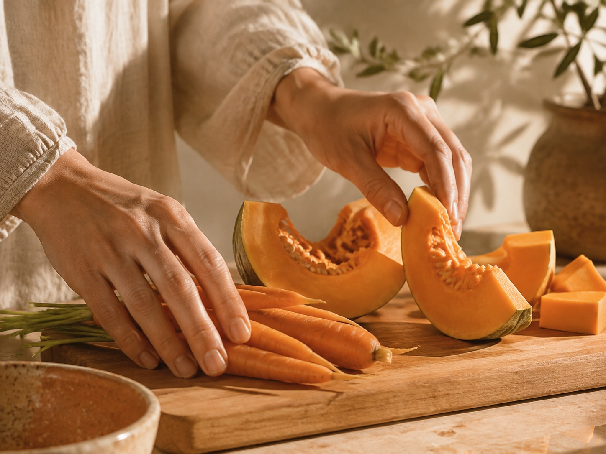

Workshops
Meer leren over voeding en leefstijl vanuit TCM.

Er staan nog geen workshops aangekondigd
Op deze website is momenteel geen bevestigd workshopprogramma beschikbaar. Voor persoonlijke begeleiding kun je meer lezen over het TCM-consult.